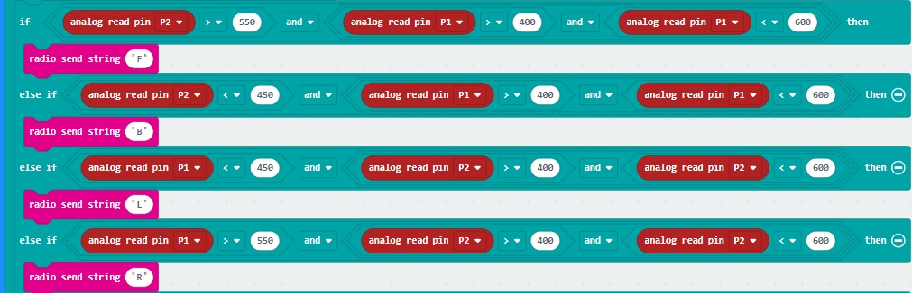

<h1>Joystick</h1>
The joystick X and Y direction are read via the analog inputs.<br>
This code will read the X and Y of the joystick and send an associated radio message to indicate direction<br>
<br>
<hr>
